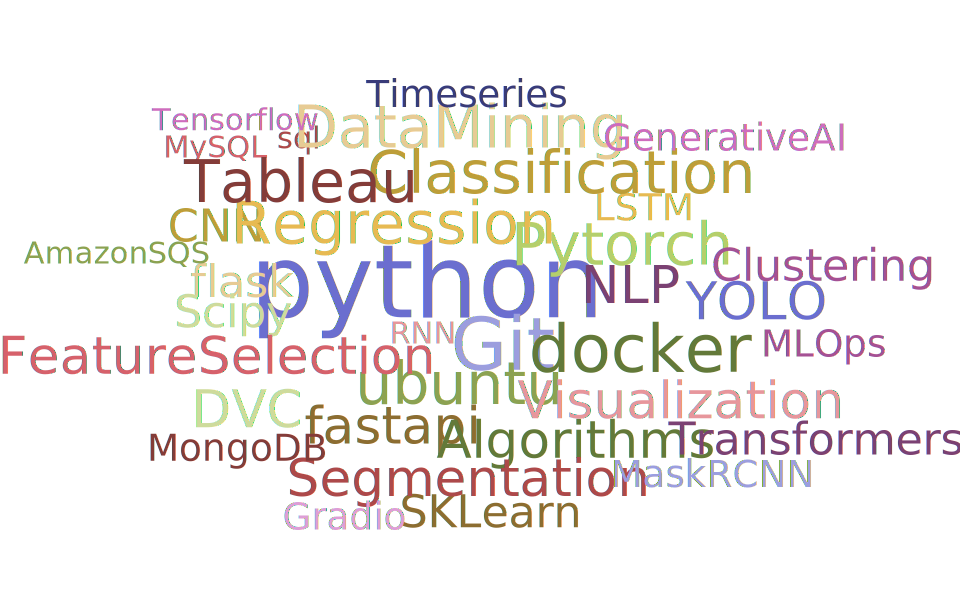

- Crop Recommendation
My Profile:
- An exuberant and accomplished data science engineer having 2+ years of experience, passionate about cutting-edge technologies, and skilled in developing scalable solutions to a wide range of data science problems, specializing in Machine Learning algorithms, Computer Vision and NLP.
- Have a good understanding of the end-to-end life cycle of Data science projects. Worked extensively on DVC to track ML models and create pipelines. Have experience in training and optimization of object detection and NLP models on servers with GPU.
- Have extensive experience in annotation, preprocessing the text data and training names entity recognition(NER) models in servers.
- Theoretical and practical knowledge of MLops CI CD pipeline in Azure Cloud.
My Experience:
WowLabz
Jan 2022 - Present
Data Scientist
- Built stable and maintainable codebases using git to develop python package and FastAPI backend which implements named-entity recognition(NER) pipeline to extract relevant information from unstructured text into predefined entities.
- Training and optimization of YOLOV5 object detection algorithm on a custom dataset.
- Integrated DVC to track the models and to create pipelines to run stages of model training.
WowLabz
Aug 2021 - Jan 2022
Data Science Intern
- Implemented Azure MLOps pipeline which include model building, unit tests, continuous Development and continuous deployment pipelines.
- Worked on Name Entity Recognition(NER) project from scratch using scipy module. Data annotation is carried on doccano tool which is required for training custom NER model.
Innodatatics
Jan 2021 - July 2021
Data Scientist Intern
- Implemented the machine learning project on Inventory management system using XG Boost algorithm which gives high r2 score and developed the web API in Flask framework and deployed the model in Heroku platform.
- Implemented the time series forecasting project to forecast the particulate matter for next 24hours using SARIMA which gives less RMSE score and developed the web API in streamlit frameworks and deployed the model in Heroku platform.
Power Research & Development Consultants
Aug 2018 - July 2021
Power System Engineer
- Responsible for performing power system studies like load flow analysis, short circuit studies, transient stability studies, relay co- ordination and grid islanding studies.
- Performed three phase unbalanced load flow study on Tata Power Network.
My Skills:
My Projects:
- The project objective is to recommend the crops based on soil, type, temperature and humidity.
- The dataset is trained with different classification algorithms and Random Forest algorithm is selected to build the API as it yield highest accuracy of 99%.
- The predictive model is deployed in Heroku and Google Cloud platforms using Streamlit and Flask library.
- Git-hub link for this project: https://github.com/sumantha-NTS/Crop-Recommendation.git
- Wine Quality Prediction
- The project objective is to predict the quality of wine.
- The dataset is trained with different regression algorithms and XGBoost algorithm is selected to build the API as it yield highest Accuracy.
- The predictive model is deployed in Heroku platform using Flask framework.
- Git-hub link for this project: https://github.com/sumantha-NTS/Wine-Quality-Prediction.git
- For detailed explaination my blog link is given here Blog
- Predicting new House prices in Bengaluru
- The project objective is to predict the new house prices in Bengaluru based on location, total sqft etc.
- The dataset is trained with different regression algorithms and XGBoost algorithm is selected to build the API as it yield highest R2 value.
- The predictive model is deployed in Heroku platform using Streamlit library.
- Spam Classifier
- The project objective is to classify the message into Spam or Not spam.
- Text preprocessing is carried out on dataset and Naive Bayes algorithm is used to classify the message into Spam or Not spam.
- Model is deployed in Heroku platform using flask library.
My Education:
-
2018 - Bachelor of Engineering
Institute - R N S Institute of Technology
Stream - Electrical & Electronics Engineering
Duration - [2014-2018]
Aggregate - 80.10%
Location - Bengaluru, Karnataka -
2014 - Intermediate
Institute - Govt. PU college
Stream - Science
Duration - [2012-2014]
Aggregate - 88.00%
Location - Sagar, Karnataka -
2012 - High School
Institute - M G N Pai High School
Duration - [2010-2012]
Aggregate - 78.40%
Location - Sagar, Karnataka
CONTACT ME
+91 9035697661
sumanthneechadi@gmail.com